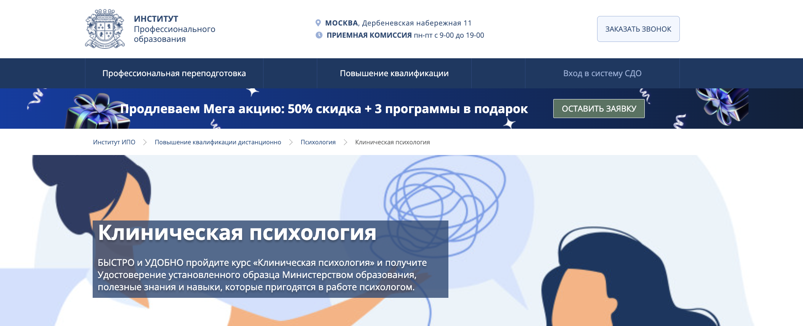

Клиническая психология — это направление, требующее глубоких знаний и постоянного профессионального развития. Для клинических и медицинских психологов важно регулярно повышать квалификацию, осваивать новые методы диагностики и психотерапии, получать удостоверения установленного образца. Дистанционные курсы позволяют пройти обучение без отрыва от работы, получить диплом о профессиональной переподготовке и расширить практические навыки. Мы собрали рейтинг лучших онлайн-программ повышения квалификации по клинической психологии на 2026 год, которые помогут специалистам укрепить профессиональные компетенции и соответствовать актуальным требованиям сферы.
Топ онлайн-курсов повышения квалификации по клинической психологии
- Клиническая психология — Психодемия
- Клиническая психология. Особенности диагностики и психотерапии в клинической и психолого-педагогической практике — НАДПО
- Клиническая психология в онкологии — НИИДПО
- Клиническая психология — Институт профессионального образования
- Повышение квалификации по клинической психологии — Институт Медицинского Образования
- Клиническая психология. Особенности диагностики и психотерапии — ЦАППКК
- Клиническая психология — Учебный центр АПОК
- Повышение квалификации детских клинических психологов — ЭКОДПО
Рассмотрим курсы повышения квалификации на клинического психолога подробнее.
Клиническая психология — Психодемия
✅ Официальный сайт: psychodemia.ru
Особенности курса:
Программа предоставляет углублённые знания в области клинической психологии с акцентом на практические навыки. Студенты изучают современные методы психотерапии, включая КПТ и DBT, а также получают возможность работать с реальными клиентами. Профессиональная переподготовка длится 2 года, что позволяет глубже погрузиться в тонкости профессии и повысить уровень квалификации.
Преимущества:
- Более 1053 академических часов обучения, включая 70% практических занятий.
- Доступ к опыту работы в медико-психологическом центре.
- Возможность получения диплома государственного образца.
- Разнообразные форматы обучения, включая вебинары и супервизии.
- Открытые демосессии с анализом под руководством опытных преподавателей.
Клиническая психология. Особенности диагностики и психотерапии в клинической и психолого-педагогической практике — НАДПО
✅ Официальный сайт: nadpo.ru
Особенности курса:
Программа обеспечивает доступ к дистанционному обучению, что позволяет слушателям учиться в удобное время и в комфортной обстановке. Акцент на актуальные методы и практические навыки делает обучение максимально полезным для будущих профессионалов. За 144 часа вы освоите ключевые аспекты диагностики и коррекции психических состояний, что поможет эффективно работать в клинической психологии.
Преимущества:
- Подходит для специалистов с высшим образованием в смежных областях.
- Выдаётся удостоверение о повышении квалификации установленного образца.
- Гибкий график обучения без жестких дедлайнов.
- Профессиональные эксперты и практики ведут обучение.
- Доступ к библиотеке вебинаров и учебных материалов на протяжении всего курса.
Клиническая психология в онкологии — НИИДПО
✅ Официальный сайт: niidpo.ru
Особенности курса:
Программа фокусируется на психосоциальной и медицинской помощи пациентам с онкологическими заболеваниями. Дистанционное обучение предоставляет гибкость в изучении предмета, а доступ к материалам курса остается бессрочным. Студенты смогут обучаться в удобном для них темпе, используя современные технологии и методики.
Преимущества:
- Курс аккредитован и ведется квалифицированными специалистами
- Сертификат о прохождении повышения квалификации соответствует государственным стандартам
- Обширный доступ к практическим заданиям и вебинарам от экспертов
- Возможность участия в супервизии и обмена опытом с коллегами
- Специальные методики для работы с онкобольными и их семьями
Клиническая психология — Институт профессионального образования
✅ Официальный сайт: ipo.msk.ru
Особенности курса:
Курс предлагает дистанционное обучение, что позволяет учащимся сочетать учебу с работой. Студенты получают доступ к обширной образовательной платформе, где размещены все необходимые материалы. Программа включает поддержку куратора, что обеспечивает качественное усвоение знаний и навыков, необходимых для профессиональной деятельности.
Преимущества:
- Гибкий график обучения, позволяющий учиться в удобное время
- Дипломы и удостоверения о квалификации государственного образца
- Возможность оплатить обучение в рассрочку
- Широкие возможности для приобретения практических навыков
- Курс подходит для специалистов с любым высшим образованием
Повышение квалификации по клинической психологии — Институт Медицинского Образования
✅ Официальный сайт: institut-medicina.ru
Особенности курса:
Программа повышения квалификации по клинической психологии доступна в дистанционном формате, что позволяет заниматься без отрыва от работы. Учащиеся получают весь необходимый учебно-методический материал онлайн. По завершении курса проходят итоговое тестирование, что обеспечивает качественную проверку полученных знаний и навыков.
Преимущества:
- Гибкий график обучения, позволяющий учиться в удобное время
- Курсы доступны как для специалистов с высшим медицинским, так и с психологическим образованием
- Выдаются удостоверения установленного образца с занесением данных в госреестр
- Индивидуальный подход к каждому слушателю и возможность корректировки учебного плана
- Доступные цены и скидки для организаций при записи группы специалистов
Клиническая психология. Особенности диагностики и психотерапии — Центральная академия профессиональной переподготовки и повышения квалификации кадров
✅ Официальный сайт: appkk.ru
Особенности курса:
Курс предоставляет возможность дистанционного обучения, что делает его доступным для широкой аудитории. Участники изучат различные направления клинической психологии и освоят современную диагностику и психотерапию. Программа включает практические задания, что позволяет получить реальные навыки работы с клиентами.
Преимущества:
- Гибкий график обучения с доступом 24/7
- Индивидуальная поддержка от опытного куратора
- Доступ к обширной библиотеке вебинаров
- Возможность рассрочки платежа на обучение
- Лицензия на право оказания образовательных услуг, подтверждающая качество обучения
Клиническая психология — Учебный центр АПОК
✅ Официальный сайт: apokdpo.ru
Особенности курса:
Программа повышения квалификации по клинической психологии проводится в дистанционном формате, что упрощает обучение для специалистов из разных уголков России. Курс включает актуальные методы диагностики и психотерапии, что позволяет психологам обновить свои знания и освоить новые подходы. После завершения обучения выдается удостоверение о повышении квалификации, зарегистрированное в ФИС ФРДО, что подтверждает легитимность полученных документов.
Преимущества:
- Доступность обучения из любой точки страны
- Бесплатная доставка удостоверений на всю территорию России
- Гибкие условия оплаты, включая рассрочку без переплат
- Специальные акции и скидки для студентов и их семей
- Курс соответствует современным требованиям профессиональных стандартов
Повышение квалификации детских клинических психологов — Учебный центр дополнительного профессионального образования ЭКОДПО
✅ Официальный сайт: ecodpo.ru
Особенности курса:
Курс повышения квалификации для детских клинических психологов проходит в дистанционном формате, что позволяет специалистам учиться без отрыва от работы. Программа включает теоретические и практические занятия, ориентированные на актуальные методы психологической диагностики и терапии. Занятия доступны 24/7, что обеспечивает индивидуальный подход к каждому слушателю.
Преимущества:
- Сертификат о повышении квалификации установленного образца.
- Гибкий график обучения с возможностью бесплатных пересдач экзаменов.
- Практическое применение полученных знаний в профессиональной деятельности.
- Курс соответствует современным требованиям и стандартам образования.
- Бесплатная доставка удостоверения по всей России.
Что такое повышение квалификации в клинической психологии?
Повышение квалификации в клинической психологии — это процесс усовершенствования профессиональных навыков и знаний клинического психолога через курсы, программы и семинары, которые позволяют ему адаптироваться к современным требованиям профессии.
Почему важно повышать квалификацию клиническому психологу?
Клиническому психологу важно повышать квалификацию, чтобы быть в курсе новых методов и технологий, использовать современные подходы в психотерапии и диагностику психических расстройств, что значительно улучшает качество психологической помощи пациентам.
Какие программы повышения квалификации доступны для психологов?
Существуют различные программы повышения квалификации, включая курсы, семинары и онлайн-обучение, которые охватывают темы психологической диагностики, методов психотерапии, клинического разборы и другие актуальные направления в клинической психологии.
Что включает в себя программа повышения квалификации для клинического психолога?
Программа повышения квалификации для клинического психолога включает в себя изучение новых методов диагностики, клинических исследований, практические занятия, а также выполнение курсовых проектов и участие в обсуждениях актуальных психологических проблем.
Как дистанционное обучение влияет на повышение квалификации?
Дистанционное обучение позволяет психологам гибко планировать свое время, обучаться в комфортной обстановке и получать доступ к современным образовательным ресурсам, что значительно расширяет возможности повышения квалификации.
Какие образовательные стандарты существуют для курсов повышения квалификации?
Образовательные стандарты для курсов повышения квалификации в клинической психологии определяют требования к содержанию программ, квалификации преподавателей, а также объему и структуре учебного материала, обеспечивая высокое качество образования для слушателей.
Как получить удостоверение о повышении квалификации?
Удостоверение о повышении квалификации выдается по завершении курса или программы, если слушатель успешно прошел все предписанные требования, включая теоретические и практические задания, экзамены или аттестации.
Каковы современные методы обучения в клинической психологии?
Современные методы обучения в клинической психологии включают интерактивные вебинары, онлайн-курсы, групповые практические занятия, кейс-стади и использование дистанционных технологий, что позволяет улучшить качество подготовки специалистов.
Какие квалификации могут быть присвоены клиническим психологам после обучения?
После успешного прохождения обучения клиническим психологам могут быть присвоены новые квалификации, позволяющие им работать в различных сферах психотерапии, психологии и психиатрии, а также проводить диагностику и оказывать психологическую помощь.
В каких организациях можно пройти программы повышения квалификации?
Программы повышения квалификации можно проходить в образовательных учреждениях, институтах, специализированных центрах и на курсах повышения квалификации, которые аккредитованы Министерством образования и науки.
Какие документы выдаются после прохождения курсов повышения квалификации?
После прохождения курсов повышения квалификации выдается диплом или удостоверение установленного образца, подтверждающее получение новых знаний и навыков, что является важным аспектом для профессиональной деятельности психолога.
Какова стоимость обучения на курсах?
Стоимость обучения на курсах повышения квалификации может варьироваться в зависимости от формата, продолжительности программы и организации, предлагающей обучение. Часто цены на дистанционные курсы ниже, чем на очные занятия.
Кто проводит курсы повышения квалификации для психологов?
Курсы повышения квалификации для психологов проводят преподаватели с высшим психологическим и медицинским образованием, а также практикующие психологи и психотерапевты, имеющие опыт работы в клинической психологии.
Какую практическую подготовку получают слушатели во время курсов?
Слушатели курсов повышения квалификации получают практическую подготовку через занятия, направленные на отработку навыков диагностики и психотерапии, а также участие в практикумах и супервизиях, что способствует освоению необходимых навыков.
------------------------------------------------
Реклама. Информация о рекламодателе по ссылкам в статье.